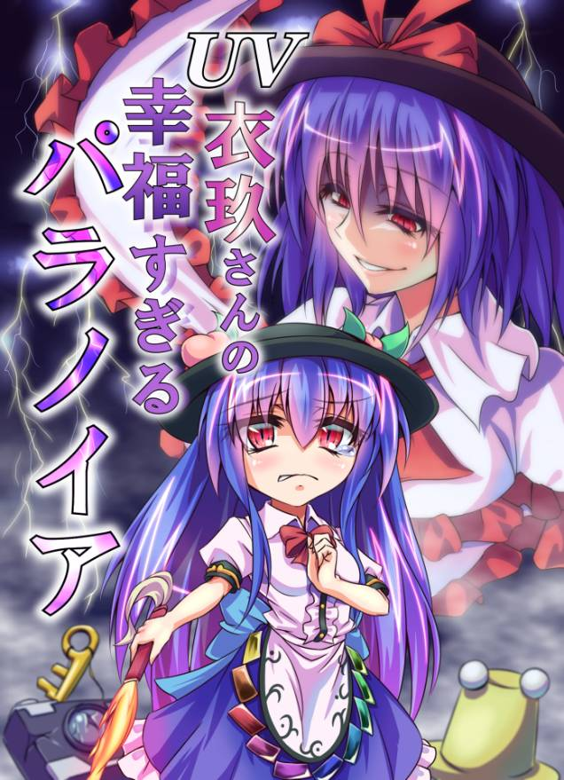
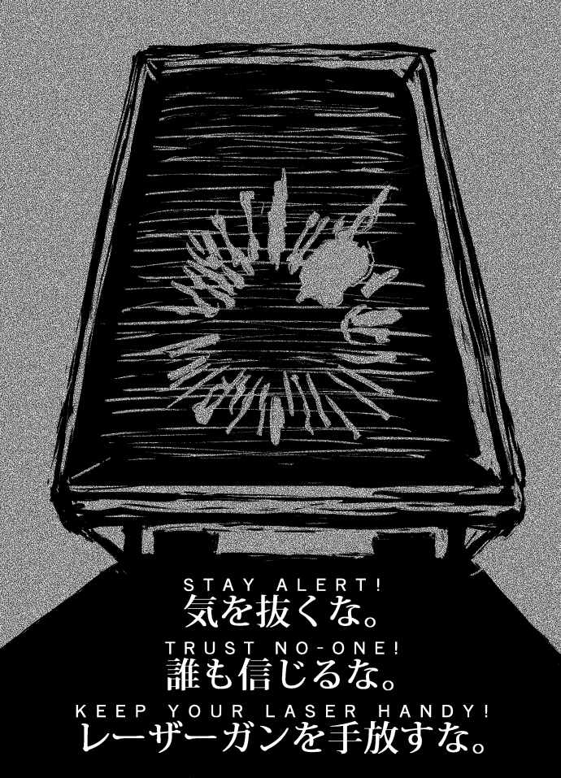
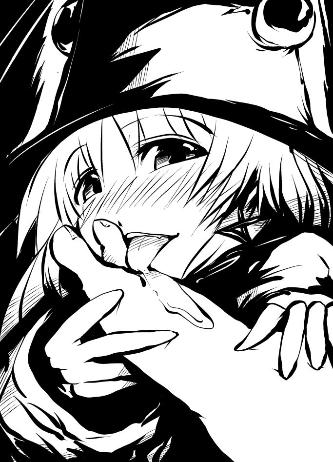
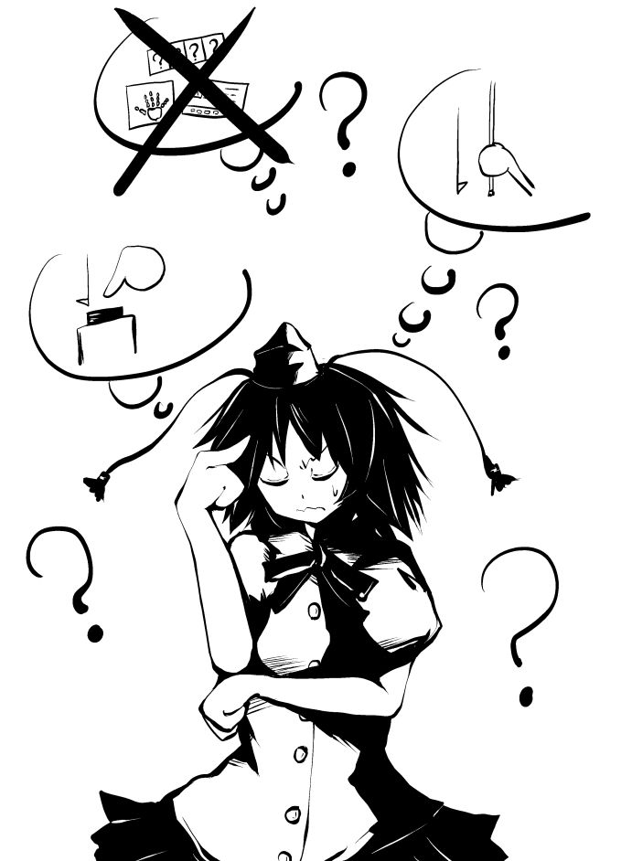
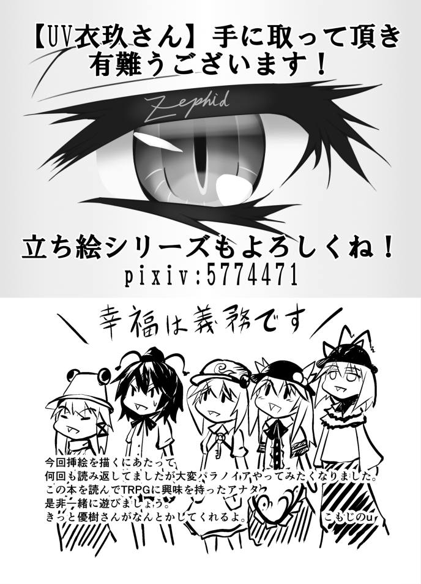
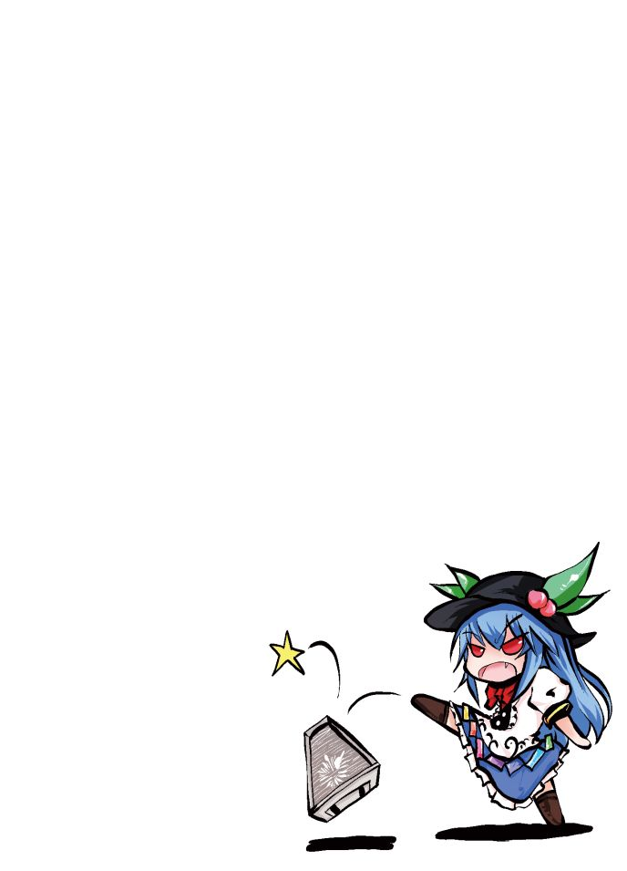

| UV衣玖さんの幸福すぎるパラノイア: ～ パラノイア リプレイ 第1巻 ～ | |
| 優樹 光 | |
| (2019) | |
ＵＶ衣玖さんの幸福すぎるパラノイア
～ パラノイア リプレイ 第1巻 ～
2019年（令和元年）5月27日 発行 第1版
著者： 優樹 光
編集・発行： メルマガ【実践留学道場】事務局

目次
２．
ミッションアラート
３．
ブリーフィングルームへ

「さて市民、あなた達はＩＲ（インフラレッド）のクズ共ですが、私は心優しいＵＶです。あなた達がこのＴＲＰＧの舞台であるアルファコンプレックスでＲ（レッド）市民として暮らしていけるように、一度だけガイドをしてあげましょう」
衣玖は普段の様子とは違う、誇らしげかつ尊大な態度で説明を始める。
「まずはこのＴＲＰＧが一体どういうものかです。市民にとり、わかりますか？」
「わ、わからない、です」
にとり...いや、市民にとりは怯えた表情でそれに応える。
「そうです市民、その情報は貴方のセキュリティクリアランスには開示されていません。あなたはまだトラブルシューターではないのです。だから先ほど私はあなた達のことをＩＲの市民と呼びました」
（いや、クズってはっきり言ってたけどね）
諏訪子はそう思ったが、口には出さなかった。今の衣玖には言っても無駄だとわかっているのだろう。
「で、でもそれじゃあゲームをプレイできないよ？」
「パラノイアでは異なります、友人が誰か、敵が誰か、装備品がどのように機能するか、そしてルールもです。ただひとつわかるのは、皆があなたを蹴落とそうとしていることだけです」
「私達がお互いに...？協力しあって色々なことをするのがＴＲＰＧじゃないの？」
少なくとも、にとりの知っているＴＲＰＧはそうだった。
「いいえ、貴方の友人はザ・コンピュータだけです。ザ・コンピュータはこのアルファコンプレックスを母のように見守ってくれる親愛なる存在です」
（まぁ、そのコンピュータが狂ってるんだけど）
文はパラノイアの設定を思い出しつつ、そうひとりごちる。
「えっと、じゃあ私達は何をすればいいの？」
「貴方は素晴らしいことに反逆者を告発し、それがザ・コンピュータの忠誠に報いたことになりました。なので、その功績をもってあなた達はトラブルシューターと任命されたのです」
「さっきも言ってたけど、トラブルシューターって何？」
「それは反逆者を根絶やしにする役割のことです」
「じゃ、じゃあ反逆者ってのは？」
「反逆者とは親愛なるコンピューターを裏切り、アルファコンプレックスに住む生きとし生けるものを、破滅させようとしています。反逆者はのきなみ正体を暴かれ、撲滅されなければなりません。そしてミュータント、秘密結社に所属する者もまた反逆者です」
ここまでひと息に説明した衣玖は、にやりと笑ってこう付け足した。
「ところで...あなたはミュータントです。そして秘密結社のメンバーでもあります」
「ちょっと、どういうことよ！それじゃあ私達全員反逆者じゃない！」
天子は衣玖の言っていることの矛盾を指摘する。
「いいえ、根絶させなければならないのは"反逆者"だけです」
「だからその反逆者が私達なんでしょう？」
「今はまだ誰もあなた達がミュータントで秘密結社のメンバーであることを知りません、そして反逆者はいたるところに居ます、それを自分が反逆者であると見破られる前に証明すればいいのです」
「...それって楽しいの？」
「もちろんです市民！これはとても楽しい経験になるでしょう。ザ・コンピュータがそう言っているのです。あなたは親愛なるコンピュータを疑うのですか？ザ・コンピュータを疑うことは反逆ですよ？」
「ひゅ、ひゅいぃ！た、楽しいよね！コンピュータ様を疑うのは反逆だもんね！」
「素晴らしい理解です市民、これであなた達のセキュリティクリアランスはＲ（レッド）です。パラノイアの世界へようこそ」
（参考：ＰａｒａｎｏｉａＯ、ＩＮＦＲＡＲＥＤのためのイントロダクションより）
追記
「さて、ここからは私からこのゲームについて大事な話があります」
「このゲームは先程説明したように、プレイヤー同士が騙し合ったり処刑しあったりするものです。しかし、これはあくまでブラックジョーク、話の中ではギスギスした雰囲気を演出したりすることもあるでしょうが、実際は和気あいあいとお互いの死を笑いあいながらプレイしていると考えてください」
「これは現実のゲームにおいても同じです。パラノイアでの出来事はただのジョーク。目的の達成や最後まで生き残ったことが良いのではなくて、一番笑いを取ったプレイヤーが勝利なのです」
「だからこそ、現実でそのいざこざを持ち込むことはやめましょう。これは元々、そういうゲームなのですから」
「ルールについて詳しく知りたい人はＰａｒａｎｏｉａＯのウェブサイトを見てみてください。また、ルールを説明している動画もありますし、興味の持たれた方はパラノイア【トラブルシューターズ】のルールブックを買ってみてください」
「ですが安心してください市民！パラノイアというゲームは、ルールを知らなくても見ているだけで楽しめるゲームです！もちろん、ルールを知っていたほうが楽しめるのは間違いありませんが」
「この本(及びＷｅｂで公開済みのプロローグ、ＵＲＬは奥付に記載)でその面白さを伝えられるかどうかはわかりませんが、少しでもパラノイアに興味を持ってくれることを期待していますよ。市民たちの幸福な奉仕を待っています」
「ゲームを始める前に一つハウスルール...というほどのものではありませんが、一つ伝えておくことがあります」
「パラノイアでは基本的に名前の表記は、
名前-クリアランスカラー-住居セクター-クローンナンバー
となりますが、今回は名前とクローンナンバーのみの表記とします」
「クリアランスはＲｅｄから上がりませんし、住居セクターも特に今回は利用しないためです」
「以上のことをご了承ください」
「さて、それではゲームを始めていきましょう。市民、幸福は義務です。あなたは幸福ですか？」
「「「「はい、私達は疑いようもなく幸福です！」」」」
（なんか変な感じだけどこれが合言葉みたいなものなのよね）
天子...いや、市民天子-１は少しぎこちなく唱和しつつ、自分を納得させる。
「まずあなた達はアルファコンプレックス内にあるとあるカフェで出会いました。ちなみに初対面です」
「カフェは大通りに面しており、道には様々なクリアランスの市民が行き交っています。また、高位のクリアランス市民が何かを行っているようですね」
「ちょっと待って、クリアランスって何のことよ？」
「おや、市民天子、クリアランスの項目をしっかりと読まなかったのですか？完璧でないことは反逆ですよ？」
「本来であればここで略式の処刑を行っても良いのですが、私は寛大なＵＶです。クリアランス制度について説明をしてあげましょう」
「アルファコンプレックスに住む市民は全てセキュリティクリアランスを持っています。これは絶対的な階級であり、下位の者が上位の者に逆らうことは基本的にできません」
「クリアランスはこのようになっています」
」
「Ｉｎｆｒａｒｅｄ(Ｂｌａｃｋ)--Ｒｅｄ--Ｏｒａｎｇｅ--Ｙｅｌｌｏｗ--Ｇｒｅｅｎ--Ｂｌｕｅ--Ｉｎｄｉｇｏ--Ｖｉｏｌｅｔ--Ｕｌｔｒａｖｉｏｌｅｔ(Ｗｈｉｔｅ)」
「ちなみに私はＵＶ、つまり最高のセキュリティクリアランスです。また、あなた達はＲｅｄクリアランスであり、装備品も全てクリアランスカラーで統一されています。」
「これはあなた達の行動範囲はＲｅｄまでのものと限定されていて、それ以上の情報や物品には基本的にアクセスできないことになっています。これを念頭に置いておけば、問題ないでしょう。わかりましたか？市民天子」
「わかったわ、とにかく色に気をつければいいわけね」
「まぁ、そういうことですね」
「ではゲームを続けましょう。さて、この大通りに面したカフェはどのクリアランスでも利用できるものです。ただ、基本的にはＲｅｄ以下のものしかいませんね」
「そんなカフェですが、今は大勢の市民達でごった返しています。そのためあなた達は相席を余儀なくされて、一緒のテーブルについているわけです。さて、どうしますか？」
「どうするって...どうしよう？」
「まぁ、カフェなんだし、何か注文すればいいんじゃない？」
「では全員メニューから食事を注文するということでよろしいですか？」
「私は構わないわ」
「いえ、待ってくださいＵＶ様、私はただ休憩しにきただけですので、特に注文はしないでおきます」
「おや？そうですか、まあいいでしょう」
（どうせ注文してもろくなものが出てこないでしょうし、ここは安全策でいきましょう）
「まぁまぁつれないこと言うんじゃないよ、私が何かおごってあげるから、飲み物くらい注文したら？」
「いえいえ、お構いなく」
「市民文、他人の好意を無碍にするのですか...でしたら...」
「わかりました！私も何か注文します！」
「一体何をやっているのかしら」
「さぁ...」
（市民諏訪子め、余計なことを...）
「はい、それではあなた達の前にサンドイッチのようなものと、ＢＢＢ（炭酸飲料）が届きました。大したものではないので、クレジットの消費はなしにしておきましょう」
「それはありがたいね。じゃ、いただこうかねぇ」
(ダイスを振る音)
「市民諏訪子はまぁまぁの味だと感じましたね」
「それじゃあ私達も」
(ダイスを振る音)
「幸運なことにあなた達は無事に食事を終えました。ただし市民にとりの食事は怪しげな臭気が立ち上り、味は革靴のようなものでしたが」
「へっ！？どういうこと！？」
「もしかして今、何かが危なかった？」
（ようやく気づきましたか、このアルファコンプレックスでは何をするにも命がけなのですよ）
「さて、あなた達が何かに彩られていく大通りを眺めていると、突如街頭に設置されていたスピーカーから音声が聞こえてきます」
「市民天子、文、諏訪子、にとりの４名は****のブリーフィングルームに ４０ 分以内に集合するように！」
「何、それ？」
「ミッションアラートですよ。我々はこれに従って行動しなければならないのです」
「でも肝心の場所が聞こえなかったわよ？」
「おや、市民天子、完璧なはずである市民がブリーフィングルームの場所すら知らないと？」
「いやだって言ってなかったじゃない」
「ＺＡＰＺＡＰＺＡＰ！>市民天子！」
「はい、市民文が放ったレーザーは市民天子を蒸発させました。市民天子はクローンナンバーを増やすように」
「へっ！？ええ！？」
「私は言ったはずですよ。完璧な市民であればブリーフィングルームの場所を知っていて当然だと、それを知らなかったということは、市民天子は反逆者に違いありません」
「な、な、な、何よそれ！」
「うわぁ...そういうゲームなんだね、これ」
「ひゅいぃ...」
「一応説明しておくとＺＡＰというのはレーザーの発射音です。基本的に３回連続で言ってから対象の名前を言います。」
「さて、というわけで市民天子のクローンが運ばれてきました、次のあなたはうまくやってくれるでしょう」
「ぐぬぬぬ...クローンナンバーってのはこの数字のことかしら？最大で６ってなってるけど」
「そうです、今回のセッションではあなた達のクローンは６人まで。全て消費したらゲームから退場となります、気をつけてください」
「一番最初に死ぬだなんて屈辱的だわ...！」
「ふふん、いきなりミスをするのが悪いのですよ。市民天子は自分が発言する際の注意力が足らなかったようですねぇ」
「天狗...あんたねぇ！」
「市民天子、天狗とはなんですか？その情報はあなたのセキュリティクリアランスには開示されていません」
「うえぇ！？な、なんでもないわ！」
「まぁ、今のはちょっとした忠告です。本来であれば略式の処刑を行ってもよかったのですが、初めてのプレイですからね、多めに見てあげましょう」
「ただし、市民文は初心者ではないようですね？」
「そ、そんなことはありませんよＵＶ様、私も初心者です、ただ新聞記者という仕事柄、人の発言はよく聞いているものでして...」
「まぁ良いでしょう。とは言えあなたには手加減はいらないようですね」
（ちっ、いきなりやりすぎましたか）
市民文-１は少々軽率な行動だったかと先ほどの行動を反省した。
（これは面白くなってきたねぇ）
（雰囲気が！部屋の雰囲気が険悪すぎるよぉ！）
一方他の二人はそれぞれ対照的な反応をしており、特に市民にとり-１は怯えを隠せない様子だった。
「さて、ここで一旦読者の方に向けて説明をしましょう」
「先程市民天子が市民文にＺＡＰされましたね。これがどういうことかというと、アルファコンプレックスではすべての市民が完璧で幸福であることは義務なのです。ですから「できない」「わからない」などということはありえません。そんなことを言う市民はコミーの反逆者なのです。即刻抹殺されなければなりません」
「ちなみに反逆者の筆頭として上がるのが共産主義者（コミュニスト）通称コミーです」
「コミーは反逆者、反逆者はコミーと言われるほどコミーはアルファコンプレックスでは敵視される存在となっています」
「ですから、発言には常に注意する必要があります。通称ＺＡＰスタイルと呼ばれるプレイスタイルではちょっとした言葉尻を捉えてＺＡＰなど当たり前、むしろ殺してから理由をこじつけるなどやり方は色々あります」
「とはいえ片端からＺＡＰしていてはゲームになりません、ＧＭもＰＬもその点を注意しながらプレイするのが望ましいでしょう」
「それではセッションを再開しましょう、あなた達はどうしますか？」
「ちょっと市民文！あんたはブリーフィングルームの場所を知っているんでしょうね！」
「もちろんですとも。ＵＶ様、近くに端末はありますか？」
「（ダイスを振る音）残念ながらありませんね」
「では近くのＩＲのゴミどもに聞きます。先ほどの描写では大勢いるはずですよね？」
「ええ、その通りです」
「それでは近場のＩＲのゴミどもに聴きこみをします。レーザー銃をちらつかせながらね」
「文、えげつないねぇ...」
「ふふふ、これがパラノイアですよ！」
「じゃあ私達も聴きこみを手伝うよー」
「そうしよっか」
「ぐぐぐ...そういうことだったのね...ようやく理解したわ。今に見てなさい！」
「では市民文から処理していきましょう。結論から言うと、市民文が聴きこみをしたＩＲ市民はあなた達と同様にブリーフィングルームの場所を聞き取れなかったようです。店が混雑していたためですね」
「む、あてがハズレましたか...」
「続いて市民諏訪子ですが、どこで聴きこみを行いますか？」
「喫茶店が駄目っていうなら大通りにいる人たちかな」
「わかりました」
「ふむ、では市民諏訪子は大通りで何か作業を行っているＲｅｄ市民を捕まえることができました、どのように話しかけますか？」
「そうだねぇ「やあ兄弟、景気はどうだい？」と話しかけるよ」
「それ、何のキャラよ」
「早苗が持ってた何かの本にこういう挨拶をするキャラクターがいたのさ」
「ふうん...」
「そうするとそのＲｅｄ市民はこう応えますね「なんだ同じＲｅｄか。見ての通りさ、ブルー様から言われてよくわからない装飾を街にほどこしているのさ」」
「装飾？」
「ええ、よく大通りを見てみると、何かキラキラしたものやよくわからないヒモのようなものが街灯などに飾り付けられていますね」
「ふーん、なんだろうね。私達が見てわかるものなのかな？」
「いいえ、あなた達にもそれがなんなのかわかりませんね」
「じゃあいいや、とりあえずブリーフィングルームの場所が聞こえていなかったか聞いてみるよ「私は完璧な市民だからさっきの放送は間違いなく聞こえていたんだけど。もし万が一間違いがあってはならないから放送内容を聞いていたら照会させてくれないかな？」」
「するとＲｅｄ市民はこう応えます「聞こえていたが...ただで教えてもらおうってわけじゃないだろうな？」」
「んーこれは...いわゆるあれだね。うん、わかるよ」
「じゃあそのＲｅｄ市民相手に靴を舐めるを使うよ！」
「うえぇ！？」
「周りに人の目がありますが構わないのですか？」
「その方が燃えるじゃない、おっけーおっけー」
「全く躊躇しないのね...こいつ、痴女なんじゃないかしら」
「では濃厚なロールプレイをどうぞ」
「長く生きた神の扇情的なロールプレイをとくと見よ！」
「靴...舐めさせてもらっていいですか？あ、でもできれば脱いで素足を舐めさせてもらいたいんですけど...う、ん...蒸れた匂いがこもって...素敵。では舐めますね...ぺろ...ちゅぱ...指も一本一本丁寧に...ちゅぱ...れるれる...はぁ...」
「市民諏訪子の情熱のこもったなめ方にそのＲｅｄ市民の顔は上気し、熱を帯びていく、ときおり性感スポットを刺激するのか、ぴくりと体が震える。ついには立っていられなくなり、膝立ちの姿勢に、そして市民の股間からは」
「ストップストップストーーーーーップウ！！！なんなのこの無駄に細かい描写は！？必要ないでしょ！？」
「いや、必要でしょ。ロールプレイなんだから」

「そうですよ。他人のロールプレイを邪魔するとは、市民にとりは反逆者なのですか？」
「うえっ！？い、いや反逆だなんて、あはは、すいませんでしたー...」
「この河童、いや、市民にとり簡単に日和ったわね...」
「で、情報は手に入ったのかな？」
「そうですね顔を上気させたＲｅｄ市民によりブリーフィングルームの場所が判明しました。「第３セクター東 32A ビルの 22 階 2208 ルーム」です」
「ふむ、それじゃあその情報を皆に伝えようかな」
「わかりました。あなた達は市民諏訪子からブリーフィングルームの場所について共有します」
「市民諏訪子、流石完璧な市民ですね。これでブリーフィングルームの場所を再確認することが出来て、より完璧なトラブルシューティングができるでしょう」
「ちなみに場所がわかったのはいいんだけど、ここからどれくらい離れているわけ？」
「ここから直線距離で１時間半程の場所にありますね」
「直線距離って...」
「え、つまり建物の存在を無視して突っ込んだ状態で１時間半！？全然間に合わないじゃん！」
「ＺＡＰＺＡＰＺＡＰ！>市民にとり！」
「はい、市民天子の放ったレーザーによって市民にとりは蒸発しました」
「な、なんでー！」
「完璧な市民ならブリーフィングに間に合わないなんてことはないのよ。だからブリーフィングに間に合わないと言った市民にとりはコミーの反逆者だったのね。処刑してあげたわ」
「つまり、こういうことよね」
「素晴らしい理解です市民天子。これからの奉仕にも期待します」
「さて、市民にとりのクローンですが、私の温情でブリーフィングルーム前まで送ってあげましょう」
「う、嬉しいけど悲しい...」
「悲しい？おや、ひょっとしてＳＳＭですか？幸福薬の投与が...」
※ＳＳＭ(士気水準未満、いわゆる幸福でない状態)
「い、いえ！今度の私は完璧です！今も幸福でたまりません！」
「いいでしょう。市民にとりの奉仕に期待します」
「さて、他の市民はどうしますか？ちなみに公共交通機関として「一瞬でマッハに到達！超ウルトラ配送システム」がありますよ。ちなみに赤い液体がべっとりと張り付いていますが、このシステムによる事故は一件も報告されていないので、完璧に安全なシステムです」
（でましたね移動手段という名のデストラップ...こんなものに頼れるわけがありません、何か別の手段を探さなければ）
「お、いいねーそんな便利なものがあるなんて。じゃあそれに乗ろうかな～」
（えっ、市民諏訪子は正気なのですか！？いや、知らないだけ...？それとも何か策があるのでしょうか）
「では市民諏訪子は「一瞬でマッハに到達！超ウルトラ配送システム」に乗りました」
(ダイスを振る音)
「はい、市民諏訪子がカタパルト状のそれに乗って、起動スイッチを押すと、発射と同時に血煙を上げながら粉微塵になりましたね」
「あっはっはー死んだ死んだー！」
「では市民諏訪子のクローンもブリーフィングルーム前まで送られました。次の市民はうまくやってくれるでしょう」
「前の私は簡単に爆散するような反逆者だったけど、次の私はもちろん完璧だよ～」
（市民諏訪子...面白そうなことなら生き残ることなど考えないで動くタイプですか。私も巻き込まれないように気をつけないといけませんね）
（見るからにヤバイ装置だったのにどうして乗ったのかしら...何か考えがあるの？くっ、情報がたらないわ）
「ちなみに走って移動したらどれくらいかかるのかしら？」
「そうですね。人体の限界を超えて命という灯火を燃やし尽くす勢いで走り続ければもしかしたら間に合うかもしれませんね」
（それ普通に走ったら間に合わないってことだよね...）
「いいわ、私は走って向かうことにしましょう」
「いいのですか？」
（ＵＶ様、ここで私のミュータント能力、電撃を使うわ。なんかの漫画で電気を操って自分の体の反応速度を飛躍的に上昇させるとかなんとかという能力があったからいけるはず、いいかしら？）
（ふむ...通常ならそのような使い方はしませんが、面白いのでいいでしょう）
(ダイスを振る音)
「市民天子は走りだすと同時に稲光を発しながらすさまじい勢いで動き出し、体を焼きつくされて蒸発しました」
「ぎゃあああああああああああ！」
「では市民天子のクローンもブリーフィングルームの前に転送しておきましょう。それで、残った市民文はどうしますか？」
「そうですね、周囲に車はありますか？」
「はい、ありますね」
「ではそれを拝借しましょう」
「どのようにしますか？」
「違法改造で私が乗れるように改造します」
「ふむ...わかりました」
（人目もあるので難易度はこれくらいに...コロコロ、あ、ファンブル）
「市民文が車に近づいた瞬間車が青い光を発しながら凄まじい爆発を起こし、大勢の市民を巻き添えにしながら市民文もそれに巻き込まれました。もちろん死亡です」
「あややややややや！？」
「というわけで市民文のクローンもブリーフィングルームの前に送られてきます。」
「さて...予想外のトラブルばかりでしたが、これでようやく４人共ブリーフィングルームへ到着しましたね」
「しかし、あなた達は頑張りが足りませんね、この調子では先が思いやられます。もっと柔軟に対応してください」
（これ本当にダイスを振ってるのかな...いくらなんでも失敗が多すぎるような...でも今はそんなことはどうでもいいんだ、重要じゃない。重要なのはどうやって生き残るかだよ）
「さて、それではセッションを続けましょう。先ほどは市民たちが自力ではブリーフィングルームに辿りつけないという残念な結果に終わってしまったので、これからは頑張っていただきたいですね」
「では早速ですがＵＶ様、まず周囲を観察します、何がありますか？」
「まず、あなた達はつるりとした継ぎ目のない幅５メートル程の赤い通路にいます。窓などは一切ありませんね」
「ちょっと待って、ブリーフィングルームの前にいるなら扉があるはずじゃないの？」
「ありますよ、ただしあなた達から１０メートル程離れたところにですが」
「１０メートル...？」
「我々が送られたのはブリーフィングルームの前ではなかったのですか？」
「ええ、ですからブリーフィングルームの前ではありませんか、１０メートル前」
「...ちなみに、ブリーフィングルームまでの１０メートルにはなにか変わったものはあるのかしら？」
「そうですね、床には縦幅、横幅ともに４０センチほどのタイルが石畳のように敷き詰められています」
「そしてそれぞれのタイルが数秒おきにチカチカと光って、その度に色が変化しますね」
「変化する色っていうのは...」
「レッド、オレンジ、イエロー、グリーン、ブルーの５色ですね」
「そしてその通路の天井には銃らしきものが取り付けられたカメラがびっしりと並んでいます」
「...うわぁ」
「これは流石に隠さなくてもわかりますね、レッド以外の床を踏んだらレーザーが飛んでくるのでしょう」
「間違いないわね」
「ふむー、なるほどね」
「ＵＶ様、近くに端末などは...」
「先ほど言ったとおりです、周囲には何もありません」
「むぅ...」
「もうちょっと何か手段がないものかしらね...博打をするのもためらわれるわ」
「（コロコロ、コロコロ、無言でダイスを振る）」
「早く行動しないと何かやばいかも...」
「さあ、どうするのですか？」
「わかったわ、私から行こうじゃないの」
（ＵＶ様、施設知識でこういう仕組みを知っていた、ということにはならないかしら？）
（ふうむ、ちょっと説得力が弱いですね。まぁ、成功すれば少しだけ判定を有利にしてあげましょう）
（ダイスを振る音）
（残念ながら失敗です。難易度は変わりません）」
（くうう...ダメだったか...じゃあ赤い床だけを歩くようにして先に進むわ）
（わかりました）
（コロコロ、おや、成功ですね）
「市民天子が赤い床だけを踏むように慎重に歩を進めた結果、無事にブリーフィングルームの扉の前まで通路を渡り切ることができました」
「やったわ！」
「さて、他の市民はどうしますか？」
「では私が参りましょう」
「わかりました、次は市民文ですね」
（ＵＶ様ここで私のミュータント能力（ごにょごにょ）を使います、それでいけますか？）
（ダイスを振る音）
（問題ありませんね）
「市民文も市民天子よりすんなりと通路を渡り切りましたね」
（ん？少し描写が変わったね。市民文、正規の手段じゃなくて何か抜け道を使ったかな？）
（ＵＶ様、市民文はどういう風に渡ったのか教えてくれないかい？）
（ダイスを振る音）
（残念ながら市民諏訪子には市民文がどうやって渡ったのか詳しく観察することができませんでした）
（それじゃあ仕方ないか、まあ少し気に留めておこうかな）
「じゃあ次は私が行くよー」
「わかりました」
「施設知識って使える？」
（...オープンで聞いてきましたか、まあいいでしょう）
「ええ、使えますよ」
（ちっ、市民諏訪子も施設知識持ちか...！）
（ダイスを振る音）
「成功ですね、市民諏訪子は過去に同じような仕組みの設備を見たことが有ります。ただしはっきりと覚えているわけではありません」
「ですが、知識があるということで少しだけ判定を有利にしてあげましょう」
「これは嬉しいね。じゃあ渡ってみようかな」
（ダイスを振る音）
「市民諏訪子が通路を慎重に進んでいましたが、途中で躓いてしまい複数の色の床に接触しつつ通路に倒れこんでしまいます」
「その瞬間天井のカメラから一斉に炎やら液体やら電撃やらレーザーが発射され、市民諏訪子は床の染みになりました」
「あっはっはー！やっちゃったー（施設知識意味なかったー）」
「市民諏訪子のクローンはブリーフィングルームのドアの前まで送っておきましょう」
「残りはあなただけですよ、市民にとり」
「は、はい」
（ＵＶ様、私が一番最初にここに送られてきましたよね？他の皆が来るまで観察していてパターンがなんとなく読めてるということにはできませんか？）
（ふーむ...まぁいいでしょう、少し判定を有利にしてあげましょう）
「じゃ、じゃあ渡るよー...」
（ダイスを振る音）
「さて、市民にとりですが、順調に歩みを進めていきます」
「ですが途中で戸惑ったような顔になると、誤ってイエローの床を踏んでしまいました」
「ひゅいいいいいい！」
「するとレーザー銃から何かの液体が発射され、市民にとりはずぶ濡れになってしまいます」
「あ、あれ...？」
「そして液体に触れた市民にとりのジャンプスーツが溶け始めました」
「えっ？えっ？」
「はい、市民にとりは生まれたままの姿になりましたね」
「いやいやいやいや！」
「市民にとり、ほらサービスシーンですよ」
「カメラ寄せないで！やめろよーぅ！」
「いい眺めですね。じっくり鑑賞しましょうか」
「なんでこんなギミックがー！」
「はい、十分ですね、ではレーザーが発射されて市民にとりは死にました」
「鬼ー！悪魔ー！」
「私は竜宮の使いですよ。では、市民にとりのクローンもブリーフィングルームのドアの前に転送されてきました」
（こんなんじゃ私、トラブルシューターをやめたくなっちゃうよ...）
「さて、市民たちはブリーフィングルームのドアの前に到着しましたね。これからどうしますか？」
「じゃあさっさとドアを開けてー...」
「待ってください！まずはドアを調べましょう」
「ええ～、しょうがないなあ」
（市民諏訪子の脳天気な行動に巻き込まれるなんてまっぴらごめんです、慎重に進まなくては）
「ではドアを調べるということでいいのですね？」
「ええ、ドアとその周辺には何がありますか？」
「まずドアにはドアノブがついていますね、一般的な回すタイプのドアノブです」
「ふむ」
「それからドアの右側には１から９までの数字が並んだパネルがあります」
（暗証番号を入れるタイプですか...）
「そのすぐ下には何か板状のものを通すようなスリットのある箱状の機械があります」
（これはIDカードでしょうかね...）
「そしてドアの左側ですが、何かを押し当てたような跡が残っている機械があります」
（手のひらを押し付けるタイプの静脈認証ですか？ううむ...）
「更にその下には赤いボタンがあります」
（えっ？）
「そしてダイヤル式の回すタイプのつまみ」
（えっ？えっ？）
「天井からはヒモが...」
「ちょ、ちょっと待ってくださいＵＶ様！どれだけあるんですか！？」
「じゃあここまでにしておきましょう」
（じゃあ！？じゃあって言った！？）
「さあ市民文、どうしますか？」
「えーと...」
（ＵＶ様、私は市民文から離れておくよ～）
（わかりました、距離を取るだけでいいのですね？）
（それでいいよ～）
（ＵＶ様、周りの皆はどうしていますか？）
（市民文はドアの前、市民諏訪子はそこから離れた場所にいます、市民天子はその中間くらいにいますね）
（市民諏訪子が距離とっている...？まさか！）
（ＵＶ様、私もドアから距離を取ります、市民諏訪子とは逆方向に！）
（わかりました）
（ＵＶ様、スキル、隠密を使うわ）
（ダイスを振る音）
（失敗です、あなたは隠れられないどころか転んで大きな音を立ててしまいました）
「その場にドタンッと何かが倒れる音が鳴りました、どうやら市民天子が何かをしようとして転んだようです」
「あちゃあ...転んじゃったわ」
「！！」
「ゆ、ＵＶ様、ドアの周りには市民天子以外に誰かいますか？」
「いいえ、離れたところに市民諏訪子と市民にとりがいますね」
「どうしたの市民文～？早く扉を開けてよ～、私を押しのけたんだからさ～。それともドアを開けられないのかな？完璧な市民ならそんなことはないよね？」
（市民諏訪子め！自分だけ逃げるつもりですか！）
（ふふん、軽率な行動をしようとすれば食いついてくると思ったよ。見事に引っかかってくれたようだね、市民文）
（いやぁ...市民諏訪子の考え方は強敵でしたね...）
（コロコロ、コロコロ...）
（くっ、このまま待ち続けるのはまずい！早く行動に移さなければ結局死ぬはめになってしまいます！）
（考えるのです射命丸文...暗証番号とダイヤルは番号がわからないので除外、 ID カードは持っていない、静脈認証はまず通らないと見ていいでしょう）
（残るのは「ドアノブを掴んでそのまま開ける」「赤いボタンを押す」「天井のヒモを引っ張る」ですか）
（「そのまま開ける」は危険性が高いですが、他の全てがブラフであるという可能性もありますね...）
（「天井のヒモ」は最後にやっつけ気味に描写されたあたりからしてハズレの予感がします）
（となると最後に残るは「赤いボタン」。色が描写されていることからもこれが一番正解に近いでしょう）
「ＵＶ様！赤いボタンを詳しく観察します！何かわかることはありますか！？」
「いいでしょう、市民文が赤いボタンを調べると、このボタンは押すだけでなく引くことも回すこともできることがわかります」
「そして赤いボタンには小さく黒い文字で「偶数、↴、凹」と書かれていました」
「む...」

「（ははぁ～ん、なるほどね）」
「数字...？ここまで出てきた数字...はっ！」
「わかりました！赤いボタンを８回右に回してボタンを引っ張ります！」
「市民文がボタンを操作すると、ドアは自動でスライドして開きました」
「いよっし！」
「す、凄いね市民文、なんで正解がわかったの？」
「色々目星をつけた結果赤いボタンが正解だと睨んで、「偶数」はこの部屋のナンバーが０８であるということ、↴は時計回り、凹は引くと解釈したのですよ」
「はぁ～よく思いつくわね」
（お陰で命拾いしたわ）
「なぁに、これも普段の観察力の賜物ですよ」
（内心心臓がバクバク言ってましたけどね...）
（惜しいなぁ、市民文を自爆させようと思ったんだけど、どうやら思ったより頭の回転が早かったみたいだね）
「さて、ドアは開きましたが、どうしますか？」
「流石にもう何もないでしょう、普通に入るわよっ、と、床の色は何色かしら？」
「赤ですよ」
「じゃあいいわ、そのまま入りましょう」
「はい、ではあなた達はブリーフィングルームに入りました。部屋の大きさは１５畳ほどで、部屋を二分するように透明な仕切りがあります」
「あなた達がブリーフィングルームに入ってしばらくすると、ブリーフィングオフィサーが仕切りの向こう側から入ってきました」
「といったところで今回はここまでにしておきましょう、本来であればこのままブリーフィングを行う予定でしたが、思ったよりも長くなってしまいましたからね」
「次回も市民たちの奉仕に期待します」
まずはじめに謝っておきます。
中途半端な分量ですいませんでした！
でも初めて本を作るにあたって、最初から何百ページもあるものを作っても全く売れる気がしなかったので、このような厚さの本になってしまいました。
とはいえ買っていただいた皆さんのためにも、今後継続して完結するまで発行していきたいなと思います。
また、素敵な悪い顔をした衣玖さんの表紙を描いてくださったゼフィド氏、魅力的な挿絵及び裏表紙を描いてくださった、こもじのu氏には感謝しております。
そして、この本を手にとってくれたあなたにも。
また次に出る本でも、よろしくお願いいたします。
優樹 光

奥付「ＵＶ衣玖さんの幸福すぎるパラノイア」
サークル：Ｈｅｌｌ・Ａｒｔ・Ｉｏ(ヘルアーティオ)
作者及び本文：優樹 光
http://www.pixiv.net/member.php?id=2230298
Twitter:y_awari
Mail： missingonly@hotmail.com
表紙：ゼフィド 様
http://www.pixiv.net/member.php?id=5774471
挿絵：こもじのu 様
http://www.pixiv.net/member.php?id=40877
発行日：2019年5月27日
編集・発行：メルマガ【実践留学道場】事務局
※本書を複写、複製、転載することや、再配布することを禁じます。
本書は上海アリス幻樂団「東方Project」許可を得ての二次創作です。
